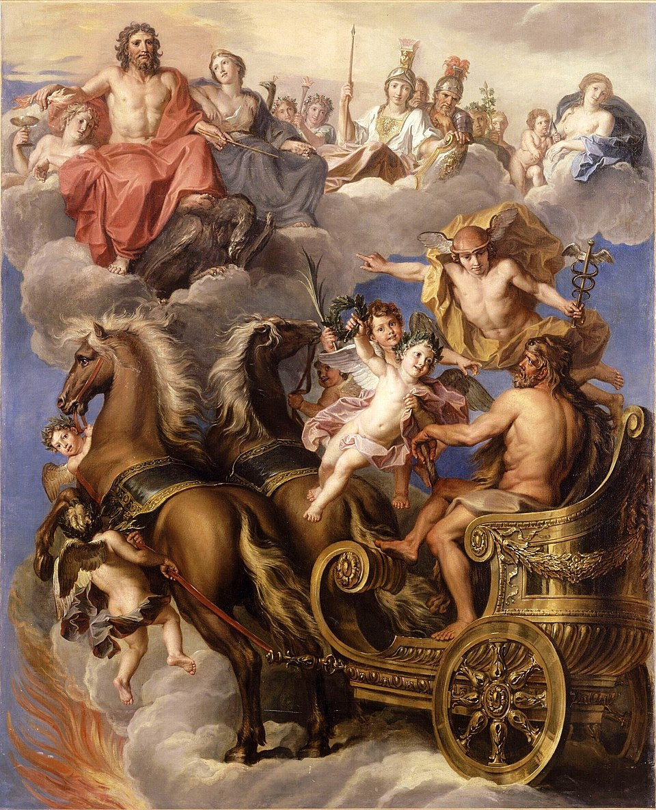
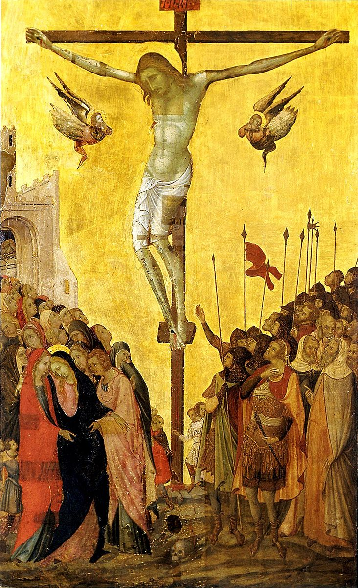
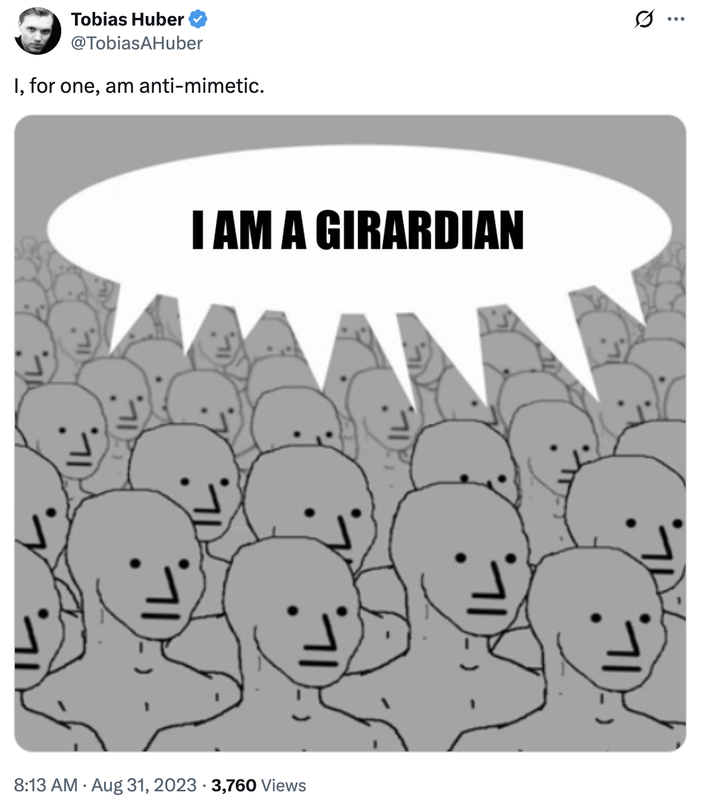
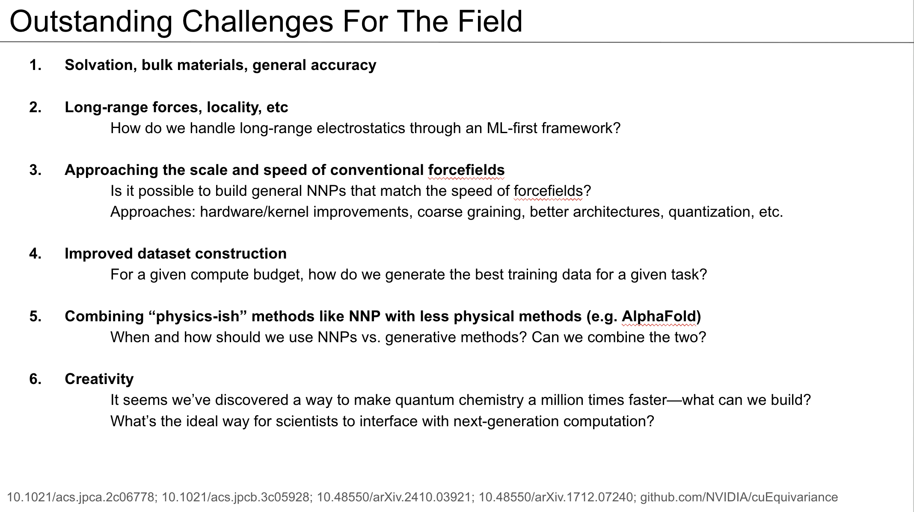
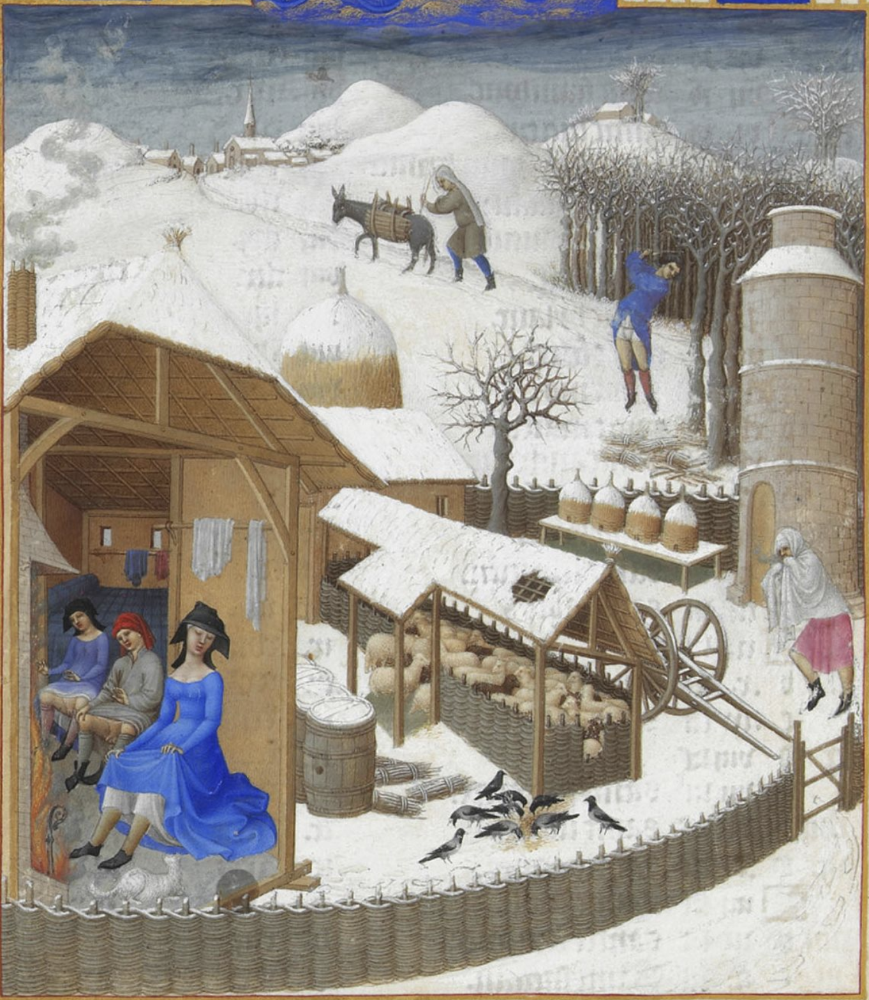
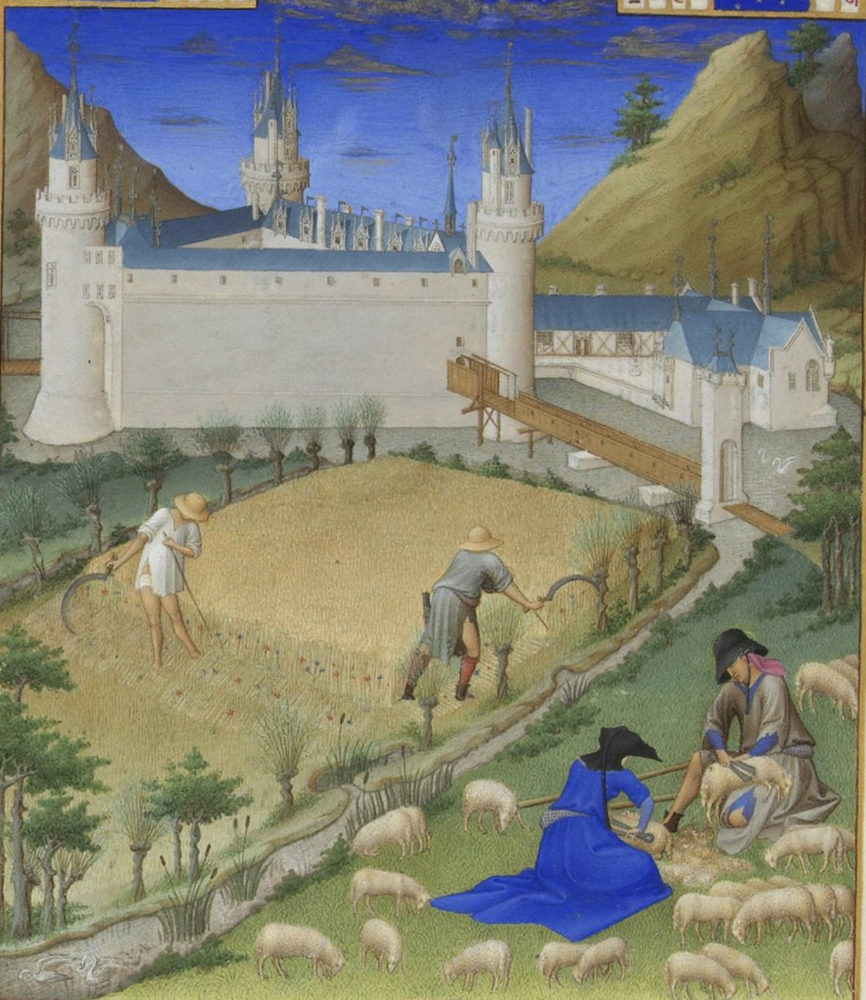
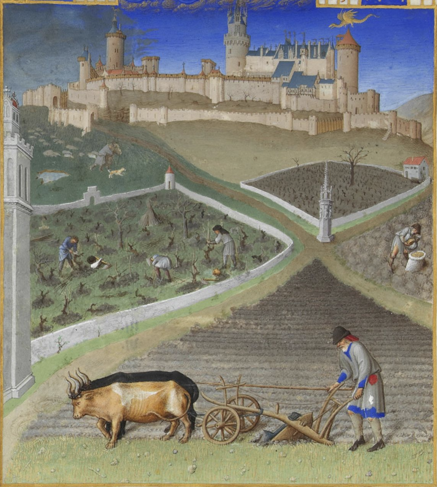
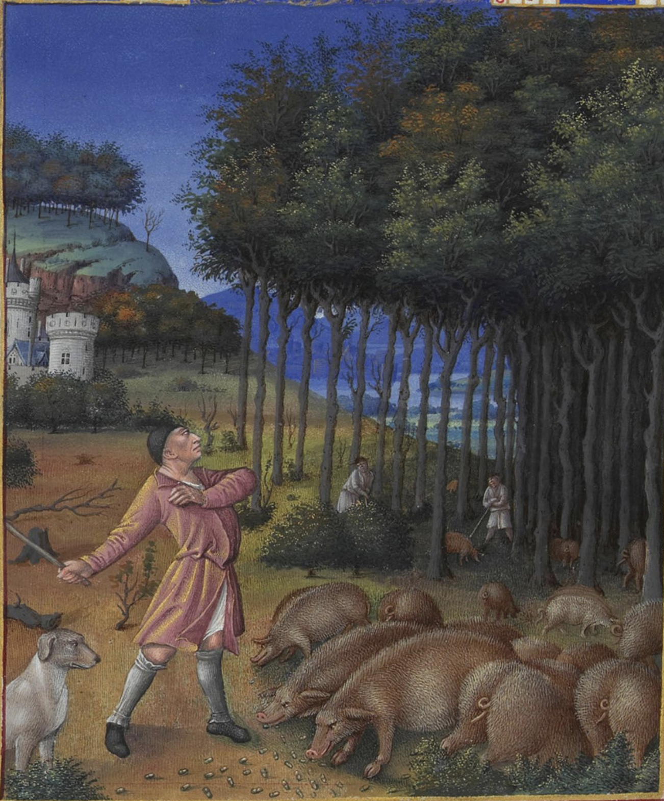

August 4, 2025The Moneylender and his Wife, Quentin Matsys (1514)Inspired by relatedwritings from Scott Alexander, who is funnier than me. TW: fiction, but barely.
AlphaProteinStructure-2 is a deep learning model that can predict the structure of mesoscale protein complexes like amyloid fibrils. AlphaProteinStructure-2 is free for academic usage. Typically this means researchers at universities can use the model for free, while researchers at for-profit institutions are banned from using the model without an explicit license agreement.
This creates arbitrage opportunities. For-profit companies can “collaborate” with academic groups and use the model for free in exchange for other forms of compensation. Similarly, “academics” in the process of creating startups from their academic work are incentivized to maintain their institutional affiliations for as long as possible. Both of these loopholes deprive model creators of the chance to capture the value they’re creating, a problem which plagued AlphaProteinStructure-1.
AlphaProteinStructure-2 solves this by explicitly specifying that the model is free for academic usage, not for academic researchers. Running jobs for companies doesn’t count as academic usage, nor does research in support of a future startup. To use AlphaProteinStructure-2, scientists must explicitly disavow any future commercial applications of their work and pledge to maintain the highest standards of academic purity. Because of the inevitable diffusion of ideas within the university, this has led AlphaProteinStructure-2 to be completely banned by all major US research institutions.
The only academic users of AlphaProteinStructure-2 are a handful of land-grant universities whose tech-transfer offices have been shut down by federal regulators for abuse of the patent systems. To ensure that no future commercialization is possible, all incoming professors, postdocs, and graduate students must symbolically run a single AlphaProteinStructure-2 calculation when they join. It is believed that important breakthroughs in Alzheimer’s research have occurred at one or more of these universities, but no scientific publisher has yet been able to stomach the legal risk needed to publish the results.
* * *
Rand-1 is a multimodal spectroscopy model developed by a decentralized anarcho-capitalist research organization. Rand-1 is not licensed for non-commercial use; only for-profit companies are allowed to use Rand-1 (in exchange for a license purchase). Model-hosting companies are allowed to host Rand-1 but cannot allow any academics to use the model through their platform. Researchers at for-profit universities are fine, though.
* * *
Evolv-1a is a RNA language model that’s free for benchmarking but requires a paid license agreement for business usage. The somewhat muddy line between “benchmarking” and “business usage” is enforced by vigorous litigation. Most companies have minimized legal risk by using a single model system for benchmarking and explicitly guaranteeing that they will never use this model system for any commercial application.
For sociological reasons, tRNA has become the go-to standard for assessing Evolv-1a and its competitors, with virtually every company using tRNA-based model systems as internal benchmarks. This consensus seemed quite safe until a family of tRNA structural mutations was implicated in treatment-resistant depression. 29 of the top 30 pharmaceutical companies had used tRNA as a RNA-language-model benchmark, leaving Takeda free to pursue this target virtually without opposition. Efforts by other companies to acquire tRNA assets from startups were blocked by litigation, while Takeda’s drug is expected to enter Phase 3 later this year.
In future, it is expected that all RNA-language-model benchmarking will occur through shell corporations to mitigate risks of this sort.
* * *
DCD-2 is a pocket-conditioned generative model for macrocycles. DCD-2 is completely free to use: simply upload a protein structure, specify the pocket, and DCD-2 will output the predicted binding affinity (with uncertainty estimates) and the structure of the macrocycle in .xsdf format. Unfortunately, .xsdf is a proprietary file format, and decoding the structure back to regular .sdf format requires a special package with a $100K/year license.
* * *
PLM-3 is a protein language model that’s free for commercial entities as long as the usage isn’t directly beneficial to the business. The phrase “directly beneficial” is not clearly defined in the license agreement, though, leading to grey areas:
A therapeutics company publishes an open-source benchmark of PLM-3, and this benchmark gets substantial press coverage. Was PLM-3 directly or indirectly beneficial?
A company benchmarks the model but their published benchmark contains a statistical error. A rogue statistician catches the error and emails the company; after several discussions, the company ends up hiring the statistician. Was PLM-3 directly or indirectly beneficial?
Another company tells a mid-level scientist to benchmark PLM-3 against an internal dataset. While collating this dataset from various archives, she discovers evidence of financial malpractice and uncovers a ring of white-collar criminals who have been embezzling money. Was PLM-3 directly or indirectly beneficial?
A venture capitalist hears about PLM-3 at a party and remembers that he heard a pitch for an RNA language model several weeks ago. He ends up leading their seed round. Was PLM-3 directly or indirectly beneficial?
The company behind PLM-3 has been hiring large numbers of metaphysicists, suggesting that they plan to pursue aggressive litigation in this space.
* * *
Telos-1 is a Boltzmann generator for biopolymers. Telos-1 is free for any usage where the ultimate purpose is charitable—so research towards the public good is permitted, but research that’s intended to make money is banned. This worked as intended until Novo Nordisk sued, arguing that since they’re owned by the non-profit Novo Nordisk Foundation, the ultimate purpose of all their research is charitable. The lawsuit is ongoing.
* * *
NP-2 is a neural network potential that can only be used by non-profits. Originally, this was construed as only organizations possessing 501(c)(3) non-profit status—but after heartfelt appeals from small biotech startups, the company behind NP-1 agreed that companies that were losing money could also qualify as non-profits, since they weren’t actually making any profit.
This led to a predictable wave of financial engineering, and most pharmaceuticals started outsourcing all calculations to shell corporations. These corporations must be “losing money” each quarter, but this simply refers to the operating cash flow. So the shell corporation can simply be spun out with an initial capital outlay of ten million dollars or so, and then calculations can be sold below cost to the parent company until the money runs out.
These companies were originally intended to be disposable, but it turns out that the business model of “sell ML inference to pharma below cost” was very appealing to venture capitalists. Negative unit margins are commonplace in AI right now, and unlike other AI-for-drug-design startups, the shell corporations actually had meaningful enterprise traction. The largest of these companies, EvolvAI (formerly “Merck Sharp Dolme Informatics Solutions 1”) just closed a $200M Series D financing round despite no conceivable path to profitability.
Thanks to Abhishaike Mahajan, Spencer Schneider, and Ari Wagen for reading drafts of this post.
July 24, 2025Gustave Doré, illustration for Paradise Lost (1866)
In center-right tech-adjacent circles, it’s common to reference René Girard. This is in part owing to the influence of Girard’s student Peter Thiel. Thiel is one of the undisputed titans of Silicon Valley—founder of PayPal, Palantir, and Founders Fund; early investor and board member at Facebook; creator of the Thiel Fellowship; and mentor to J.D. Vance—and his intellectual influence has pushed Girard’s ideas into mainstream technology discourse. (One of Thiel’s few published writings is “The Straussian Moment,” a 2007 essay which explores the ideas of Girard and Leo Strauss in the wake of 9/11.)
As a chemistry grad student exploring startup culture, I remember going to events and being confused why everyone kept describing things as “Girardian.” In part this is because Girard’s ideas are confusing. But the intrinsic confusingness of Girard is amplified by the fact that almost no one has actually read any of Girard’s writings. Instead, people learn what it means to be “Girardian” by listening to the term in conversation or on a podcast and, with practice, learn to start using it themselves.1
I’ve been in the startup scene for a few years now, so I figured it was time I read some Girard myself rather than (1) avoiding any discussions about Girard or (2) blindly imitating how everyone else uses the word “Girardian” and hoping nobody finds out. What follows is a brief review of Girard’s 2001 book I See Satan Fall Like Lightning and an introduction to the ideas contained within, with the caveat that I’m not a Girard expert and I’ve only read this one book. (I’ve presented the ideas in a slightly different order than Girard does because they made more sense to me this way; apologies if this upsets any true Girardians out there!)
* * *
I See Satan Fall Like Lightning opens with a discussion of the 10th Commandment:
You shall not covet your neighbor's house; you shall not covet your neighbor's wife, or his male servant, or his female servant, or his ox, or his donkey, or anything that is your neighbor's. (Ex 20:17, ESV)
Girard argues that the archaic word “covet” is misleading and that a better translation is simply “desire.” This commandment, to Girard, illustrates a fundamental truth of human nature—we desire what others have, not out of an intrinsic need but simply because others have them. This is why the 10th Commandment begins by enumerating a list of objects but closes with a prohibition on desiring “anything that is your neighbor’s.” The neighbor is the source of the desire, not the object.
The essential and distinguishing characteristic of humans, in Girard’s framing, is the ability to have flexible and changing desires. Animals have static desires—food, sex, and so on—but humans have the capacity for “mimetic desire,” or learning to copy another’s desire. This is both good and bad:
Once their natural needs are satisfied, humans desire intensely, but they don’t know exactly what they desire, for no instinct guides them. We do not each have our own desire, one really our own… Mimetic desire enables us to escape from the animal realm. It is responsible for the best and the worst in us, for what lowers us below the animal level as well as what elevates us above it. Our unending discords are the ransom of our freedom. (pp. 15–16)
Mimetic desire leads us to copy others’ desires: we see that our friend has a house and we learn that this house is desirable. Mimetic desire, however, leads us into conflict with our neighbor. The house that we desire is the one that someone already has; the partner we desire is someone else’s.
To make matters worse, our own desire for what our neighbor validates and intensifies their own desire through the same mechanism, leading to a cycle of “mimetic escalation” in which the conflict between two parties increases without end. The essential sameness of the two parties makes violence inescapable. The Montagues and Capulets are two noble houses “both alike in dignity” (Romeo and Juliet, prologue)—their similarity makes them mimetic doubles, doomed to destruction.
While the above discussion focuses only on two parties, Girard then extends the logic to whole communities, arguing that unchecked mimetic desire would lead to the total destruction of society. To prevent this, something surprising happens: the undirected violence that humans feel towards their neighbors is reoriented onto a single individual, who is then brutally murdered in a collective ritual that cleanses the society of its mutual anger and restores order. Here’s Girard again:
The condensation of all the separated scandals into a single scandal is the paroxysm of a process that begins with mimetic desire and its rivalries. These rivalries, as they multiply, create a mimetic crisis, the war of all against all. The resulting violence of all against all would finally annihilate the community if it were not transformed, in the end, into a war of all against one, thanks to which the unity of the community is reestablished. (p. 24, emphasis original)
(Note that the word “scandal” here is Girard’s transliteration of the Greek σκάνδαλον, meaning “something that causes one to sin” and not the contemporary and more frivolous meaning of the word.)
This process is called the “single-victim mechanism”; the victim is chosen more or less at random as a Schelling point for society’s anger and frustration, not because of any actual guilt. Girard recognizes that this process seems foreign to modern audiences and mounts a vigorous historical defense of its validity. He recounts an episode from Philostratus’s Life of Apollonius of Tyana (link) in which Apollonius ends a plague in Ephesus by convincing the crowd to stone a beggar. Philostratus explains this by saying that the beggar was actually a demon in disguise, but Girard argues that the collective violence cures the Ephesians from social disorder, and that the victim is retrospectively demonized (literally) as a way for the Ephesians to justify their actions.
(How does ending social disorder cure a plague? Girard argues that our use of “plague” to specifically mean an outbreak of infectious disease is anachronistic, and that ancient writers didn’t differentiate between biological and social contagion—in this case, the plague must have been one of social disorder, not a literal viral or bacterial outbreak.)
While we no longer openly kill outsiders to battle plagues, Girard argues that the violent impulses of the single-victim mechanism are still visible in modern societies: he uses the examples of lynch mobs, the Dreyfus affair, witch hunts, and violence against “Jews, lepers, foreigners, the disabled, the marginal people of every kind” (p. 72) to illustrate our propensity towards collective violence. Racism, sexism, ableism, and religious persecution are all different aspects of what Girard argues is a fundamental urge towards collective majority violence.
In the past, ritual human sacrifice is well-documented: see inter alia the Athenian pharmakoi, the Mayan custom of throwing victims into cenotes to drown, and the sinister rites of ancient Celts. While modern anthropologists are typically perplexed by these rituals, Girard argues that they ought not to be downplayed. The development of the single-victim mechanism across so many cultures is not an accident. Instead, this mechanism is the foundation of all human culture, because it replaces primitive violence (which leads to anarchy) with ritual violence and allows society to persist and create institutions.
The single-victim mechanism is necessary cultural technology, which is why so many cultures share the myth of a “founding murder” (Abel, Remus, Apsu, Tammuz, and so on). But the founding murder doesn’t just herald the creation of human society. The collective murder of the victim does so much to restore harmony to the community that the transformation seems miraculous. The people, having witnessed a miracle, decide that the one they killed must now be divine:
Unanimous violence has reconciled the community and the reconciling power is attributed to the victim, who is already “guilty,” already “responsible” for the crisis. The victim is thus transfigured twice: the first time in a negative, evil fashion; the second time in a positive, beneficial fashion. Everyone thought that this victim had perished, but it turns out he or she must be alive since this very one reconstructs the community immediately after destroying it. He or she is clearly immortal and thus divine. (pp. 65–66)
This might seem bizarre—it did to me when I read it—but many other writers have discussed the peculiar motif of the “dying then rising” deity. A more historical example is Caesar, who is first killed and then deified as the founder of the Roman Empire, with his murder being the central event in the advent of the new age.

The Apotheosis of Hercules, Noël Coypel (c. 1700)
Pagan myths and deities, Girard argues, are the echoes of a shadowy pre-Christian era of violent catharsis, a time in which “the strong do what they can and the weak suffer what they must” (Thucydides). Behind the sanitized modern stories of Mount Olympus and Valhalla—dark even in their original, non-Percy-Jackson retellings—are sinister records of outcasts who were first killed and then deified.
Girard argues that the Bible stands in opposition to this mimetic cycle. Collective violence threatens figures like Joseph, Job, and John the Baptist, but the Biblical narrative both defends their innocence and maintains their humanity. The Psalms repeatedly defend the innocence of the Psalmist against the unjust accusation of crowds (cf. Psalms 22, 35, 69). Uniquely among ancient documents, the Bible takes the side of the victim and not the crowd.
In the Gospels, Jesus opposes the single-victim mechanism. In the story of the woman convicted of adultery, he tells the accusers “Let him who is without sin among you be the first to throw a stone at her” (John 8:7, ESV). This is the exact opposite of Apollonius of Tyana:
Saving the adulterous woman from being stoned, as Jesus does, means that he prevents the violent contagion from getting started. Another contagion in the reverse direction is set off, however, a contagion of nonviolence. From the moment the first individual gives up stoning the adulterous woman, he becomes a model who is imitated more and more until finally all the group, guided by Jesus, abandons its plan to stone the woman. (p. 57)
Jesus becomes the target of mimetic violence himself, of course, culminating in his crucifixion and death at Calvary. But Girard argues that what seems like the ultimate victory of mimetic violence—the brutal murder of the person who sought to stop it—is actually its moment of defeat, what he calls the “triumph of the cross” in a paraphrase of Colossians 2. He writes:
The principle of illusion or victim mechanism cannot appear in broad daylight without losing its structuring power. In order to be effective, it demands the ignorance of persecutors who “do not know what they are doing.” It demands the darkness of Satan to function adequately. (pp. 147–148)
Unlike in previous cases, where the actions of the crowd were unanimous and the victim perished alone, a minority remains to proclaim the innocence of Jesus. While the majority of the crowd doesn’t follow them, this is enough—the collective violence of the crowd can only function properly as long as the crowd remains ignorant of what they’re doing. Clearly explaining the victim mechanism also serves to destroy it, and so the victim mechanism is ended by the testimony of the early Christians, a stone “cut out by no human hand” that grows to fill the whole world and destroys the opposing kingdoms (Daniel 2:34–35, ESV).
The Gospel narrative exposes the workings of the victim mechanism and defeats it. While Satan thinks he’s winning by killing Jesus, Jesus’ death will make the single-victim mechanism clear and destroy the ignorance in which the Prince of Darkness must work. Girard explains this as the theological idea of “Satan duped by the cross” (which modern listeners may recognize from The Lion, The Witch, and the Wardrobe):
God in his wisdom had foreseen since the beginning that the victim mechanism would be reversed like a glove, exposed, placed in the open, stripped naked, and dismantled in the Gospel Passion texts… In triggering the victim mechanism against Jesus, Satan believed he was protecting his kingdom, defending his possession, not realizing that, in fact, he was doing the very opposite. (p. 151)
While the story of Jesus’s resurrection might seem to have many parallels with the divinization of sacrificial victims, Girard says that these are “externally similar but radically opposed” (p. 131). Indeed, he argues that the Gospel writers intentionally highlighted similarities between the false resurrection of collective violence and the true resurrection of Jesus: Mark 6:16 shows Herod anxious that John the Baptist, whom he killed, has come back to life, while Luke 23:12 shows how Jesus’ death makes Herod and Pilate friends in the same way the victim mechanism always does. In Girard’s words, “the two writers emphasize these resemblances in order to show the points where the satanic imitations of the truth are most impressive and yet ineffectual” (p. 135). The divinization of victims is pathetic and flimsy next to the true resurrection.

Crucifixion, Bartolomeo Bulgarini (c. 1330)
In the new Christian age, Jesus invites us to avoid mimetic contagion not by attempting to avoid having desires in a Buddhist way—to do so is to deny our nature as humans—but by presenting himself as the model for humans to imitate. Only Jesus, the Bible argues, is a fitting template for human desire: hence Paul’s command to “imitate me as I imitate Christ” (1 Cor 11:1), and the consistent call throughout Scripture to love what God loves and hate what God hates (cf. Ps. 139).
Girard ends his book with a discussion of modernity and our culture’s now-total embrace of victims. Girard’s writing is powerful, concise, and difficult to summarize in this section, so I’ll quote from the final pages at length.
All through the twentieth century, the most powerful mimetic force was never Nazism and related ideologies, all those that openly opposed the concern for victims and that readily acknowledged its Judeo-Christian origin. The most powerful anti-Christian movement is the one that takes over and “radicalizes” the concern for victims in order to paganize it. The powers and principalities want to be “revolutionary” now, and they reproach Christianity for not defending victims with enough ardor. In Christian history they see nothing but persecutions, acts of oppression, inquisitions.
This other totalitarianism presents itself as the liberator of humanity. In trying to usurp the place of Christ, the powers imitate him in the way a mimetic rival imitates his model in order to defeat him. They denounce the Christian concern for victims as hypocritical and a pale imitation of the authentic crusade against oppression and persecution for which they would carry the banner themselves.
In the symbolic language of the New Testament, we would say that in our world Satan, trying to make a new start and gain new triumphs, borrows the language of victims. Satan imitates Christ better and better and pretends to surpass him. This imitation by the usurper has long been present in the Christianized world, but it has increased enormously in our time. The New Testament evokes this process in the language of the Antichrist…
The Antichrist boasts of bringing to human beings the peace and tolerance that Christianity promised but has failed to deliver. Actually, what the radicalization of contemporary victimology produces is a return to all sorts of pagan practices: abortion, euthanasia, sexual undifferentiation, Roman circus games galore but without real victims, etc.
Neo-paganism would like to turn the Ten Commandments and all of Judeo-Christian morality into some alleged intolerable violence, and indeed its primary objective is their complete abolition. (pp. 180–181, emphasis original)
Satan, whose previous work through the victim mechanism was defeated by Christianity, now seeks to imitate God’s people and use their own arguments against them. Although Christians invented the idea of having sympathy for the victim (in Girard’s view), Satan now argues that Christianity itself is intrinsically a form of violence against victims, with the only solution being the “complete abolition” of Christian morals. Girard alleges that this is bad, and if implemented would lead to the pagan anarchy of long ago.
* * *
Girard’s style is hard to pin down: he bounces between anthropology, close reading of ancient texts, history, and theology without breaking stride. I enjoy reading his writing a lot, but sometimes I wish there would be more sources: he alludes to a fascinating series of historical interviews with tribes that practiced human sacrifice, for instance, but doesn’t leave a reference to the original interviews.
As a work of theology, I See Satan Fall Like Lightning is interesting but peculiar. It’s not clear to me how interested Girard is in orthodox Christian thought. He alternates between referring to Satan as a person and an abstract concept, for instance, and uses few ideas that would be familiar to students of mainstream systematic theology. This isn’t necessarily wrong, but leaves me with a lot of open questions: what does Girard make of the sacrifice of Isaac, or the concept of sanctification, or the role of faith in all this? These might be answered in his other writings, but they weren’t answered here.
As a work of history, I See Satan Fall Like Lightning is downright bizarre. The book’s literal claim—that all non-Christian “gods” are deified victims of ritual mass murder—is hard for me to accept at face value. That being said, it’s hard enough to reason about the recent past, let alone ancient pre-history. Maybe he’s right about all this? Evidence feels scarce, though, and I See Satan Fall Like Lightning hardly conducts a careful meta-analysis of all available ancient myths.
Perhaps the most similar work to Girard’s in scope and ambition is Julian Jaynes’s The Origin of Consciousness in the Breakdown of the Bicameral Mind (Wikipedia, Slate Star Codex).2 Jaynes argues that ancient people didn’t actually have theory of mind or a concept of the self: instead, they personified their internal monologue and viewed it as the voice of the gods. We usually don’t notice this when we read ancient texts, because we subconsciously assume that they were similar to us. But, to quote Scott’s review:
Every ancient text is in complete agreement that everyone in society heard the gods’ voices very often and usually based decisions off of them. Jaynes is just the only guy who takes this seriously.
Much like Jaynes, Girard takes a surprising historical observation—the ubiquity of human sacrifice and the fact that ancient people saw this as essential to the health of their society—and takes it seriously, building an entire argument about how ritual human sacrifice is the original cultural technology and the root of all civilization. While I’m not fully convinced, the intellectual commitment is admirable.
Most bizarre of all, though, is the fact that these esoteric ideas have become a mainstream part of “Grey Tribe” thought. If I’d read this book in a vacuum, I wouldn’t expect that any of the ideas would have achieved much popularity—but in today’s world, describing things as “Girardian” or “mimetic” is de rigueur for the aspiring thought leader.
This observation itself is perhaps the best testimony to the strength of Girard’s ideas. What force other than mimetic rivalry could be strong enough to convince thousands of venture capitalists, each attempting to craft a contrarian high-conviction persona, to all reference the same Christian philosophical anthropologist?

A post on X from Tobias Huber.Thanks to my wife and Ari Wagen for reading drafts of this piece, and for Micah from church for lending me a copy of this book.
Footnotes
I took a stab at discussing some Girard ideas previously on the blog, although I did actually read the essay which I discuss.
Full transparency: I’ve just read the SSC book review and not (yet) the full book, thus committing the very sin which I accuse others of committing above! "Let he who is without sin cast the first stone" &c.
(This post is copied from some notes I gave to our summer interns at Rowan almost without modification. Hopefully people outside Rowan find this useful too!)
This is a brief and opinionated guide on how to give a research talk to an external audience. Some initial points of clarification—this guide is for a research talk, not a sales call or a VC pitch. Research talks have their own culture and norms; treating a research talk as a sales call is likely to backfire disastrously.
When is a research talk appropriate? Generally, if you’re talking to scientists, you should view your talk as a research talk, unless specifically advertised otherwise.
This advice is not directly applicable for talks to internal audiences; collaborators need much less context than external audiences and you can streamline your talk accordingly. (Note that “external” and “internal” here refer to projects, not corporations—a talk to a different division of your company is “external” to the project even if you technically have the same employer.)
Goal
The goal of an external research talk is to teach the audience something. This is generally underappreciated. Many people act as if the goal of the talk is to show that they’re smart, or to show how impressive their research is, or to dump all the data from a given paper onto slides. All of these lead to talks that are mediocre at best and barbarous at worst.
If you learn something from a talk, it’s a good talk. This is also nice because it’s easy to learn something; even bad results can teach you something. For talks in different fields, I often learn more from the introduction to a talk than from the actual results section (which goes over my head).
Audience
In any given talk, there might be several categories of people.
People following the field who like your work. They will have already read your papers and are excited to see you speak. You should include extra details that aren’t in the paper for them.
People following the field who dislike your work. These people might ask pushy questions or challenge your interpretations. Don’t address the talk to them, but keep some defensive backup slides just in case. (The best way to address an aggressive question is to present a nice backup slide which shows you’ve already thought deeply about the question.)
People adjacent to the field who don’t really know your work. For Rowan, this might be a computational chemist who’s never used a neural network potential but who’s vaguely curious, or an ML researcher who’s curious about how people use deep learning in chemistry. This is usually the bulk of any given audience; your talk should be aimed at these people.
People who are just clueless. Every talk has them; maybe they were told to go by their boss, or they misremembered which seminar this was. Ideally you can teach them something too, if they bother to pay attention, but the talk isn’t for them.
A perfect talk has something for everyone; you can give the fans something they didn’t read in the paper, mollify the critics, teach most listeners something new, and maybe even interest the clueless folks.
Rough Structure
Background. What is the problem and why should the audience care about it?
History. What has been done before?
Idea. What was your idea?
Implementation. What did you do?
Results. How did the idea turn out?
Discussion. What can the audience learn from this?
Future. What’s next?
Q&A.
My contrarian take is that the background/history should comprise 30–40% of the talk. Most people have less context for your work than you expect; “context is that which is scarce.” It’s almost always worth spending more time explaining why what you’re doing is important, what other people have done, and how people in your field think about problems.
Paradoxically, the longer you spend on background, the more impactful your results might be. You’re both building tension, as the audience wonders when you’ll get to your research, and you’re positioning your research such that when you share your actual idea the audience will be maximally excited. (I always picture this like an old-school samurai duel; the longer you wait before you “strike” with your results, the better.)
Many scientists overemphasize discussing their implementation and results. These topics are always the focus of the actual work, because they take the bulk of the time, and papers focus on these too since they require the most details and associated data. But talks that just explain mathematics, statistics, or data cleaning in detail are usually boring or painful to listen to—just because you suffered through the details of this process doesn’t mean the audience needs to suffer too.
(Paradoxically, the fact that papers focus on implementation/results means that your talk is free to deemphasize them. People who are following the field may have already read your paper; people who aren’t following the field probably won’t understand the methodology or detailed results anyway. )
One exception is if there’s some personal or non-obvious story about implementation and results—if you wasted time on the wrong architecture or had some interesting realization that led to a breakthrough, these are great to include. I’ve often gone to talks just so I can hear any narrative details that aren’t “neat” enough to be in the paper.
The ending discussion can vary a lot from talk to talk, but I think it’s worth stating clearly what you think the conclusions should be from your work. What should someone in the field take away? What should someone in an adjacent field take away? What do you predict the future of this area of research will be?
Here's the last slide from a talk I gave at MSU in February:

It’s always good to save at least 10 minutes within the allotted time for Q&A, and to leave time after the talk for additional questions.
Slides
Different people and fields have different customs here; there’s no hard-and-fast rule. I rarely make new figures for talks, because it takes forever—I’ll instead take images from existing papers and put the citations at the bottom.
A few disjointed thoughts:
Animations are good, but only the “appear” animation. For complex slides, it’s good to be able to add each component one-at-a-time; otherwise viewers will get distracted trying to figure out what’s next. Anything fancier than simply making something appear is bad, though.
Slide numbers make Q&A much simpler, and there’s a way to do them automatically in both Powerpoint and Google Slides.
Large amounts of text can be distracting, but are sometimes fine. I’ll often screenshot a paragraph from a previous paper and then read a (highlighted) key sentence out loud. You probably shouldn’t have lots of original text on the slide.
Similarly, highly detailed and complex slides are bad unless the complexity of the slide is the point. Sometimes you can put up a big architecture diagram and say something pithy like “and then we did a lot of optimization, which I’m not going to get into here but am happy to discuss one-on-one later,” and then move to the next slide. This is (in my opinion) a nice way to allude to underlying complexity without getting bogged down.
To a first approximation the title of the slide should be a simple, declarative statement which summarizes the slide. This helps people to focus on the key ideas, even if they get distracted checking their phone.
If you’re presenting to organic chemists, it’s helpful to put chemical structures on almost every slide.
The past is powerful evidence for arguments about the present. Since the time of Livy and Tacitus, it’s been common to cite history to advance some ideological, cultural, or political idea. While there’s nothing wrong with this in principle, these lines of discourse often break down because (1) people know very little history and (2) what little history they do know is usually wrong.
Popular understanding of history is shaped mostly by popular culture: books, movies, and video games. These sources aren’t intrinsically bad—I’ll never remember early modern European states as well as my friend who played hundreds of hours of Europa Universalis IV in high school. But the overall effect of a history education dominated by Gladiator, 300, and Ben-Hur is to give people a weird and distorted view of the past,1 and one inchoate enough to be shaped into almost any argument about the present.
If we want to build up a more accurate view of what it was like to live in the past, we want to start with the most fundamental questions: how did people live? How did they spend their time? What did they do for work and for leisure? What did they worry about? Unfortunately, these questions are almost always unanswerable. Most historical documents don’t touch on the daily life of average people, focusing instead on chronicling noble deeds, recording economic transactions, and so on.
But exceptions can be found. The village of Montaillou is a small, mountainous village of about 250 inhabitants in the French Pyrenees (in Occitania, what was then the Duchy of Foix and is today the department of Ariège). Montaillou was remote and unexceptional in almost every way, making it exactly the sort of place which we’d never expect to see in historical documents—except that by 1300 it was one of the last strongholds of Catharism, a Christian heresy which had been almost completely eliminated by the Albigensian Crusade in the 1210s.
This is typical of historical mountain societies. In his landmark work The Mediterranean and the Mediterranean World in the Age of Philip II, Fernand Braudel writes (pp. 38–39):
There can be no doubt that the lowland, urban civilization penetrated to the highland world very imperfectly and at a very slow rate… for the simple reason that mountains are mountains: that is, primarily an obstacle, and therefore also a refuge, a land of the free. For there men can live out of reach of the pressures and tyrannies of civilization: its social and political order, its monetary economy.
The Cathars who had come to the mountains to flee persecution were dualist Gnostics who believed in the reincarnation of the soul. Their clerics and leaders, called goodmen (bonhommes) or parfaits, were celibate and refused to eat meat or drink wine. Ordinary Cathar followers didn’t hold themselves to this standard until their deathbed, when they would convert to Catharism in a ritual called the consolamentum and then completely fast until dying of hunger (called the endura). Cathars rejected the sacraments, mocked the priests and rituals of the Church, and saw themselves as the true worshipers of the Christian God.
Following the Albigensian Crusade, Montaillou and other rural towns became a refuge for Catharism. This eventually drew the attention of the French Inquisition in the person of Jacques Fournier, bishop of Pamiers. In 1320, Fornier arrested a large percentage of the population of Montaillou and interrogated them at length, recording “substantial and very detailed evidence” (xiv) about their lives. During his tenure at Pamiers, Fournier’s inquisition court investigated 578 people over 370 different days, with scribes and notaries keeping a detailed record of all proceedings in what is now known as the Fournier Register. This extraordinary document might have been lost to history except for the fact that Fournier became Pope Benedict XII in 1334 and the Fournier Register was brought to the Vatican Library.
The Fournier Register was revisited by Annales historian Emmanuel Le Roy Ladurie. His 1975 work Montaillou, village occitan de 1294 à 1324 uses the details contained in the Register to reconstruct the world of Montaillou: who the people were, what they thought about, and how they lived. I originally read this book right before starting college and liked it a lot. Recently, I’ve found myself thinking back to Montaillou in everyday discussions about history and decided to read Le Roy Ladurie’s book again.
In this post, I hope to give a taste of the world of Montaillou, and how surprisingly normal (or abnormal) aspects of this world can seem to modern sensibilities. I’m focusing on the questions that interested me the most in this reading, and have omitted a lot of interesting characters and life histories for the sake of space and focus. If you find this review interesting, you should certainly pick up the book yourself—I’ve indicated page numbers in the 30th anniversary edition for easy reference.
Setting
Montaillou was (and is) a small village on the French side of the Pyrenees, at an elevation of approximately 4500 feet. In a physical and economic sense, Montaillou was incredibly isolated. There was essentially no non-foot traffic in or out of the village, so goods were carried by hand or with a mule. Montaillou had no blacksmith or tailor, and iron tools were rare (7). Montaillou was too small to have its own mill, so villagers would take wheat by mule to the larger town of Ax-les-Thermes, grind it at the mill, and return with flour, about 10 miles by Google Maps (9).
Here's a picture of modern Montaillou from Wikipedia. The ruins of medieval Montaillou are visible at the top of the hill, and the snow-capped Pyrenees are visible some 20 miles to the south.
The bulk of calories came from bread (made from wheat or millet), and cheese was the primary protein source (8–9). Other documented animal foods include mutton, bacon, goat’s liver, eggs, and trout (9, 82, 83, 124). Cabbages, leeks, broad beans, and turnips were the most common vegetables (9). Most people in Montaillou farmed and raised animals: pigs, cows, sheep, chickens, geese, and so on. Almost everyone kept sheep, but there were some skilled itinerant “professional” shepherds who travelled across the Pyrenees living in the mountains and supervising large herds (69–135), stopping back home from season to season.
Apart from the coinage that they used, the people of Montaillou were not “French” in any meaningful sense. They spoke a dialect of Occitanian that was distinct to their region, “about a thousand people at the most” (286). When forced to flee religious persecution, villagers went not to other regions of France but to Catalonia, Lombardy, Sicily, or Valencia (286). They almost always married within their village; in the cases where someone from Montaillou married someone from the outside, it was almost always from a neighboring village (183). Thus the world of Montaillou was, in a personal sense, very small indeed.
Housing and Personal Space
The house (domus in Latin, ostal in Occitan) was the fundamental physical and social unit of Montaillou. Physically, the kitchen was the central room of the house, and perhaps the only one built of stone (39). The hearth and cooking utensils were in the middle of the kitchen, hams hung from the roof, and a table and chairs were off to the side (37–38). A cellar was often adjacent to the kitchen (38).
Personal space was not as scarce as people sometimes imagine in medieval times. Most rooms had only one or two people, and people had separate beds (38–39). Children and adults slept in separate rooms (39). Most houses only had one story, but richer villagers might have two-story houses (39). Animals typically slept in the house at night, albeit in separate rooms, and used the same door as people; sick people were sometimes put near animals to keep them warm at night. Only relatively wealthy farms had separate stables, pigsties, and sheep-pens (40).
The intellectual and social life of Montaillou revolved around the domus, “a unifying concept in social, family, and cultural life” (25). When villagers discussed Catharism and Catholicism, they identified beliefs not with individuals but with houses (28). To be the head of the house was a significant position of authority; to have one’s house confiscated or destroyed was cataclysmic (35–37).

Detail of the February scene from the Très Riches Heures du Duc de Berry (c. 1415)
Family
It’s become somewhat popular in recent years to argue against the primacy of the nuclear family. In his 2020 article “The Nuclear Family Was a Mistake”, David Brooks argues that “big, interconnected, and extended families” are the historical norm and a healthier & more natural way to live. I’ve thought about this essay and argued about it with friends many times over the past few years; in fact, these arguments were a large part of why I originally wanted to reread Montaillou.
I expected the history of Montaillou to support Brooks’s position that extended families were more normal than nuclear families in medieval societies, but it didn’t. The vast majority of houses held nuclear families, or nuclear-ish families where an uncle or grandmother lived with the core family unit. Several examples of more extended families are documented, but they are “very rare cases” and usually unstable (48). As a rule, there was only one married couple per house and the house organized itself around this couple.
Montaillou was largely patriarchal, but not entirely so. There were maternal houses where the sons took their mother’s name and son-in-laws took their wife’s name (34). Nor was primogeniture absolute. Fathers generally determined who inherited the house, but the inheritor did not have to be the firstborn, and the other sons would receive a smaller portion called a fratrisia (36). Both these facts surprised me.
Marriage was typically arranged by the family and “involved much more than a mere agreement between two individuals” (180), with numerous relatives often involved. Dowries were substantial enough that families worried that marrying their daughters might bring economic ruin upon their houses, but remained the distinct property of the wife after marriage. If the husband died first, the widow retained her dowry separately from whomever might inherit the rest of the possessions (35–36).
Widows were common because women were typically married young, between the ages of 15 and 20, while men typically waited until after 25 to marry (190). Le Roy Ladurie writes (191):
Husbands in Montaillou were generally fully adult and they often married young innocents. The girls were beginners; the men were settling down. This difference in age in a world where people died young soon produced a crop of young widows. With one husband in the grave, women prepared to go through one or even two more marriages.
While marriage for love was not the primary objective, neither was it impossible: “it was possible to love passionately within apparently rigid structures which predisposed towards and presided over the choice of a marriage partner” (187). That being said, the sources rarely speak of women’s feelings towards their husbands (189):
It is probably, and sometimes provable, that the young men in love whom we find in the Register aroused similar feelings in the girls they married. But references are scarce. Rightly or wrongly, in upper Ariège the man was supposed to possess the initiative or even the monopoly in matters of love and affection, at least in the realm of courtship and marriage.

Detail of the July scene from the Très Riches Heures du Duc de Berry (c. 1415)
Stages of Life
As might be expected, families in Montaillou were considerably larger than today. Based on data in the Register, Le Roy Ladurie estimates that there were 4.5 legitimate births per family, plus a small but non-negligible number of illegitimate births (204). For all but the wealthiest of families this was an asset: “a domus rich in children was a domus rich in manpower; in other words, rich, pure and simple” (207). Contraception was practiced, especially outside marriage, but not abortion (172–173, 209). Children were nursed for a long time, perhaps until two years old (208).
Modern people sometimes allege that love for young children is a modern phenomenon, citing the Roman paterfamilias as evidence to the contrary. In Montaillou, as today, men and women loved their young children, laughing & playing games with them and weeping bitterly when they died (210–213). The mortality rate for children and adolescents is not clear from our data but “was probably high” (221). Schooling was practical, not formal—children worked with their parents, outside and inside, and were taught religion (Catholic or Cathar) by their families. Children were often put to bed early; the Register records that a six-year-old girl is put to bed before dinner is served to guests (215).
At the age of 12 or so, boys changed status. The word used to describe them shifts from puer (used from age 2 onwards) to adulescens or juvenis. As adolescents, they began to work as apprentice shepherds, were considered to have reached the age of reason, and could be arrested for heresy (215–216). At 18, men became full-fledged adults (216). I’ll quote Le Roy Ladurie directly on aging (216):
When it came to old age, there was a different pattern for men and women. In their thirties, men were in their prime. In their forties, they were still strong. But after about fifty a man was old in those days, and his prestige, unlike that of an elderly woman, did not increase with time.
Friends
Domestic servants and hired shepherds were common, and servants often lived in their employers’ houses (115). Labor markets seem quite liquid in this time period—shepherds are often hired for a season and “did not feel this instability as some kind of oppression or alienation” (114). People were part of a market economy, but the 1300s had “easy norms” (124):
Everyone who has studied the daily life of the people of Montaillou, whether locals or emigrants, has been struck by the relaxed rhythm of their work, whether they were shepherds, farmers, or artisans… When necessary [a shepherd] got his friends to look after his sheep for him while he went down to the neighbouring town, to take, or to collect, money. Or he might absent himself for purely personal reasons, without any problems of time-keeping or supervision, to go and visit friends, mistresses (unless they came up directly to see him in his cabane) or fellow-sponsors, friends acquired at baptisms recently or long ago…. [He] enjoyed parties and entertainment, and even just a good meal among friends.
The social divide between nobles and non-nobles in Montaillou was not vast. Le Roy Ladurie writes that “ladies and châtelaines, when they met with peasant women, did not hesitate to settle down for a gossip; they might even kiss and embrace” (16). This was likely less true in larger towns or cities; “the absence of strong demarcation between groups can be explained by the relative poverty of the mountain nobility” as contrasted to “the nobles of Paris or Bordeaux, with their huge manorial estates and their vineyards worth their weight in gold” (17).
People had many close, intimate friendships outside the immediate or extended family. Groups of women socialized while fetching water, at the mill, in the kitchen, or sitting in the sun in the village square (251–254). Men met to sing, play chess, or speculate about if Heaven would run out of space for the souls of the dead (259–260). Sunday Mass was the central social event of the week, even for heretics or non-believers, but even so only about half the populace went to Mass any given week (265; 305).
Even in a village of a few hundred people, it was possible to keep secrets. Heretic parfaits snuck from house to house via secret passages (41) or disguised themselves as woodcutters to move about incognito (75–76), while nosy neighbors peeked through holes in doors or lifted up roofs (which must have been flimsy) to spy on heretical conversations (245; 256).

Detail of the March scene from the Très Riches Heures du Duc de Berry (c. 1415)
Religion and Ethics
The taxes owed to the nobility were relatively light, particularly compared to the heavy taxes extracted by the Church, and the latter were hated much more than the former (20–23). It was common for people who owed the Church money (including tithes) to be excommunicated (335). The success of Catharism in Montaillou can be largely attributed to the burdensome taxation of the Church, which gave rise to strong anti-clerical feelings far in advance of any theological rationale. I was surprised to learn that indulgences were a part of Catholic religious practice even in the early 1300s, and were hated then too (334).
Many people envision medieval Europe as a theocracy where Catholic morals reigned supreme, either for good or for ill. At least in the case of Montaillou, this wasn’t true—there were lots of mistresses, concubines, prostitution, illegitimate children, and sordid love affairs (45, 151, 169). Homosexuality is not recorded in Montaillou but is documented in the larger cities of Pamiers and Toulouse (144–149). Approximately 10% of couples in Montaillou during this time period were illicit or “living in sin,” and non-marital cohabitation was common enough that a visitor to one house was uncertain if the woman there was the man’s wife or his concubine. Le Roy Ladurie writes (169):
If anyone came across a couple openly living together, the reaction was much the same as it would be today. Were they legally married or not?
Sexual ethics aside,2 crime was rare. While petty theft was not uncommon and grazing rights were always a source of conflict, Montaillou was an intimate society where “everyone knew everyone else and strangers were easy to find,” making crimes against property rather impractical (329). In cases in which a flock or house was confiscated, it was always under some legal mechanism rather than outright use of force. During the decades covered by the Fournier Register, a single murder and a handful of rapes are recorded—while this significantly exceeds the present on a per capita basis, these events were rare and shocking to the villagers.

Detail of the November scene from the Très Riches Heures du Duc de Berry (c. 1415)
Culture
The Fournier Register excels as a window into peasant culture in the 14th century. Peasants were “fond of abstract thought and even of philosophy and metaphysics” (232), and Le Roy Ladurie remarks on “the lack of social distance between the countryman… and the nobleman, the priest, the merchant, and the master craftsman, in a world where manual labour, especially craftsmanship, was not despised” (232). The primary social engagement was the evening meal, where groups of peasants would sit for hours at benches around the fire remembering village history, discussing the health of people and animals, arguing about the resurrection of the body, or simply gossiping (247, 250). Wine was served, but not to excess—drunkenness is only mentioned in urban contexts in the Fournier Register, and even there rarely (249).
Books, while rare and expensive, were important and recognized cultural objects—both Cathar parfaits and Catholic priests derived intellectual legitimacy from the possession of books (211, 234–236). It was rare, but not unheard of, for laymen to be able to read: Le Roy Ladurie estimates that four out of the roughly 250 inhabitants of Montaillou were literate (239). As a result most ideas were transmitted orally, and the Cathar parfaits were renowned for their oration and eloquence.
I was very surprised to learn that history was virtually unknown in Montaillou. Only in larger cities like Pamiers was Roman antiquity known and discussed, and there only rarely; in Montaillou, history “scarcely went back further than the previous Comte de Foix” (282). The Church filled this void, but imperfectly. Villagers knew almost nothing of Christian history besides Creation, the lives of Mary, Jesus, and the Apostles, and the coming Day of Judgement and the Resurrection (281). As Le Roy Ladurie describes it, “the people of Montaillou lived in a kind of ‘island in time,’ even more cut off from the past than from the future” (282).
Conclusion
I’ve only scratched the surface of Montaillou here. I haven’t told the story of Pierre Clergue, heretic village priest who had at least nine mistresses (and probably more) and used his brutal authority to crush village rivals; Pierre Maury, itinerant master shepherd with a love of poverty and a fatalist outlook on life; or Béatrice de Planissoles, twice-widowed noblewoman with a proclivity for dramatic love affairs with non-nobles between husbands. I feel some guilt in omitting these thrilling tales from my review, but I don’t think I can do them justice here.
What I’ve instead attempted to do here is give the flavor of medieval life as recounted by Le Roy Ladurie. Since this is a microhistory, we have to be cautious about how much we can generalize; Montaillou was different in the 14th century than in the 10th century, and would be different again by the 17th century, to say nothing of how life would be different in Frisia, Andalusia, Calabria, or outside medieval Europe. (If there’s one thing we can learn from Montaillou, it’s that history is big and strange.)
Still, I updated a number of my beliefs about the past after reading about Montaillou. Here’s a few common claims that I thought Montaillou directly addressed.
“The nuclear family was a mistake.” I discussed this claim from David Brooks above. Per his argument, Montaillou is exactly the sort of place that we might expect to show strong non-nuclear family living patterns, and yet if anything we see the exact opposite. This suggests that nuclear-family structures are more fundamental than Brooks argues (with the important caveat that this is just a single data point).
“Medieval peasants lived miserable lives of suffering, toil, and death.” Strikingly false in the case of Montaillou. Mortality rates were certainly high, but even the subsistence-level farmers and shepherds documented by the Register had active, social, and joyful lives. I’m not convinced that the median person in Montaillou was less happy than the median person today; if anything, possibly the opposite.3
“Learning was forgotten in the Dark Ages.” I was surprised by how true this was for Montaillou. There’s been a lot of pushback against misconceptions about the so-called “Dark Ages,” and popular conceptions about the time between the fall of the Western Roman Empire and the Renaissance are usually just wrong (cf. Peter Brown). But the people of Montaillou were ignorant of almost all history, even just a few generations ago in their village. Maybe this was always true in rural areas, but I suspect this would have been much less true in Roman times and, again, stopped being true by the time of the Renaissance and the Reformation.
“Medieval Europe was a Catholic society where people adhered to Christian morals.” I hear this a lot from more traditional Catholic friends, and this is just bonkers. Maybe Montaillou is an edge case—again, village of heretics—but Le Roy Ladurie argues that the heresy was a symptom of disrespect for the Church, not a cause. The fact that 10% of couples were openly unmarried and cohabitating defied all my intuition about medieval Europe.
I really enjoyed this microhistory and would love to read different accounts of everyday life in medieval Europe—if you have any recommendations, please let me know!
Footnotes
As an aside, I’m a big fan of Bret Devereaux’s writing. He does a fantastic job of debunking myths about history, like this series on Game of Thrones or this series on Sparta, and also does a lot of interesting long-form about pre-modern agriculture, textiles, logistics, and so on.
This moral laxity was gone by the 17th century. The Reformation and Counter-Reformation gave rise to an ocean of fierce debates about theology and ethics and created a society which, compared to Montaillou, was much more concerned about matters of orthodoxy and orthopraxy and much less tolerant of any deviancy. Massachusetts Puritanism can be understood as a facet of this transformation, as can the Reformation of Manners. This change is noted by Le Roy Ladurie, but my interpretation here comes mainly from Diarmid MacCulloch’s book The Reformation.
It’s worth noting that the feudal order as experienced in Montaillou was pretty lax—less rural areas like those around Paris were probably closer to popular depictions of feudal serfdom. I’m not sure which is more “typical” of feudalism, or if that question is even coherent; feudalism is a broad and often misunderstood concept, see Ganshof’s book for a good overview.
The past few years of “AI for life science” has been all about the models: AlphaFold 3, neural-network potentials, protein language models, binder generation, docking, co-folding, ADME/tox prediction, and so on.
But Chai-2 (and lots of related work) shows us that the vibes are shifting.
Models themselves are becoming just a building block; the real breakthroughs are going to happen at the workflow level, as we learn how to combine these models into robust and performant pipelines.
Workflows are the new models.
To have a state-of-the-art computational stack for drug discovery (or protein engineering, or materials design, or anything else), it’s no longer enough to have just a single state-of-the-art model.
You need a suite of modular tools that you can combine in a way that makes sense for your task. (At Rowan, we’re seeing this happen all over the industry.)
What does this mean in practice? Here are two imaginary case studies illustrating what modern computational chemistry looks like in 2025:
Materials Science
A company is developing a new inorganic photocatalyst for bulk acid–alkene coupling (following
Zhu and Nocera, 2020).
Their workflow might look something like this:
Agentic literature search for potential photo-active inorganic materials that seem synthesizable.
A diffusion or flow-matching model for 3-D structure generation where crystallography data doesn’t exist.
Rapid structural relaxation with a neural-network potential (NNP) to generate minimized structures.
Adsorption-energy estimation with another NNP to see if alkene binding is feasible.
HOMO–LUMO gap computation with periodic DFT to estimate photo-activity.
Molecular dynamics to check the stability of the bound pose.
Volcano-plot creation and final candidate scoring based on all properties.
The entire cycle can be repeated ad nauseum to generate new candidates, with the focus gradually shifting from exploration to exploitation.
Drug Discovery
A company has identified new CNS biological targets that they hope to inhibit with a small molecule.
Their workflow might look something like this:
Based on a starting hit (from a DEL, or from a known binder), generate modifications automatically or by sampling from an enumerated library.
Filter candidates by synthesizability, solubility, pKa, and other project-specific structural filters.
Dock molecules against the target and potential anti-targets using a fast method like Vina.
For hits predicted to show good selectivity, rescore with a second method (strain-corrected docking, Boltz-2, etc.).
This cycle, too, can be repeated until you run out of Modal credits a set of promising candidates is identified for synthesis.
Neither of these case studies is based on a particular company; instead, they’re meant to illustrate the sort of ML-native workflows we’re seeing from early adopters across the chemical sciences.
For simplicity, experimental integration isn’t shown here, but any sane scientist will obviously incorporate wet-lab testing as soon as possible and feed those insights back into the top of the funnel.
In any case, the overall point is clear—no single model can by itself solve every problem, and figuring out the right way to combine a set of models is itself a non-trivial system-design problem.
It’s entirely possible to create a state-of-the-art workflow simply by combining “commoditized” open-source models in a new way, and so far the resultant workflows don’t seem obvious or easy to copy.
This defies popular intuition about what constitutes a “moat” for AI companies.
More metaphysically, the line between workflows and models is blurring.
Many ML-adjacent people think of models as the active unit of science: “they have a model for X” or “we’re building a model for Y.”
But, as shown above, most state-of-the-art research today requires lots of individual ML models, and many “models” are already miniature workflows.
For instance, running a single inference call through
the Uni-pKa “model” requires enumerating all possible microstates, performing a conformer search, and running geometry optimizations on every individual conformer—just to generate the pairwise-distance matrix used as input for the actual ML model.
Why does this matter? Here are a few thoughts that I've had, after thinking about this point:
Models must be plug-and-play, interoperable, and robust—anything that can’t be integrated into higher-level workflows won’t be used.
The best models might not be those that top isolated benchmarks; in a workflow context, speed, reliability, and uncertainty
quantification also matter.
Richard Hamming’s first rule of systems engineering comes to mind: “If you optimize the components, you will probably ruin the system
performance” (see my previous book review).
Any thinking that depends on a sharp metaphysical difference between workflows and models is probably wrong.
I recently had a sales call where someone told me they weren’t interested in any workflows—they only wanted to use models.
I wanted to send them to
old Slate Star Codex posts,
but (wisely?) held my tongue.
Devops and good software engineering will rise in importance.
At Rowan, we’ve learned firsthand how hard it is to manage hundreds of thousands of workflows across a vast sea of unruly scientific dependencies.
Relatedly, the amount of scientific, computational, and engineering expertise needed to run a modern computational-science program is
rising exponentially—and shows no signs of stopping.
Thanks to Ari Wagen for reading a draft of this post.
{kind=link}

{kind=link}